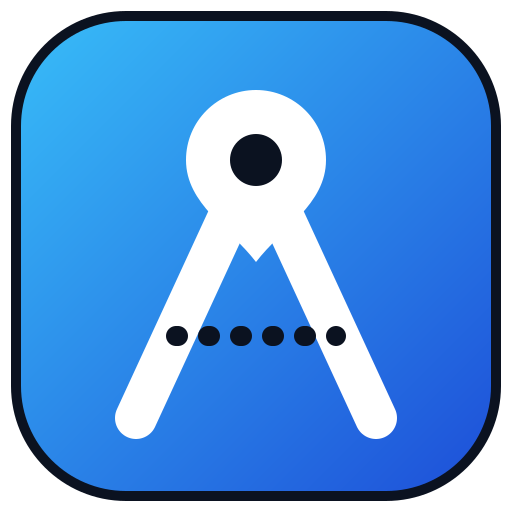

Browsers do not let a page opened as a local file start the app. In this folder, run:
เบราว์เซอร์ไม่ให้หน้าเว็บที่เปิดจากไฟล์ในเครื่องเริ่มแอป ให้รันคำสั่งนี้ในโฟลเดอร์นี้:
python3 -m http.server 8080
Then open http://localhost:8080/ · แล้วเปิด http://localhost:8080/
Or use ARutGIS at alexrut99.github.io/ARutGIS · หรือใช้ ARutGIS ที่ alexrut99.github.io/ARutGIS